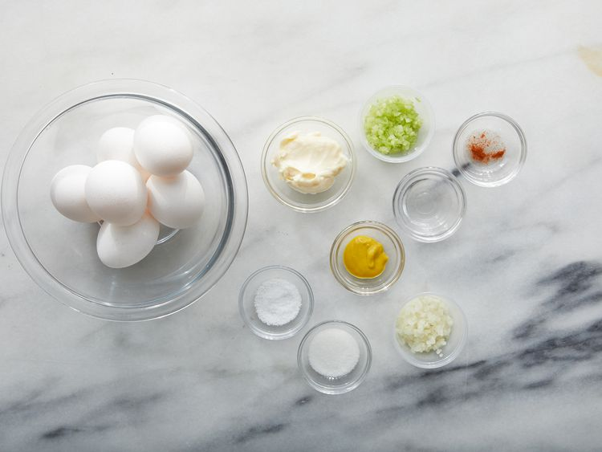
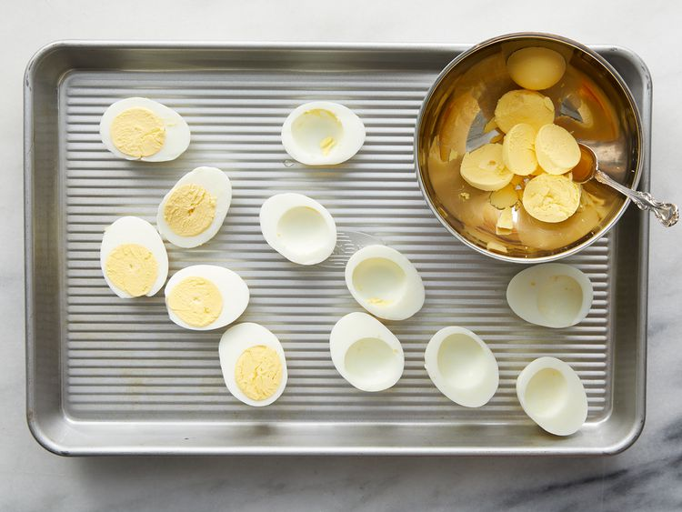
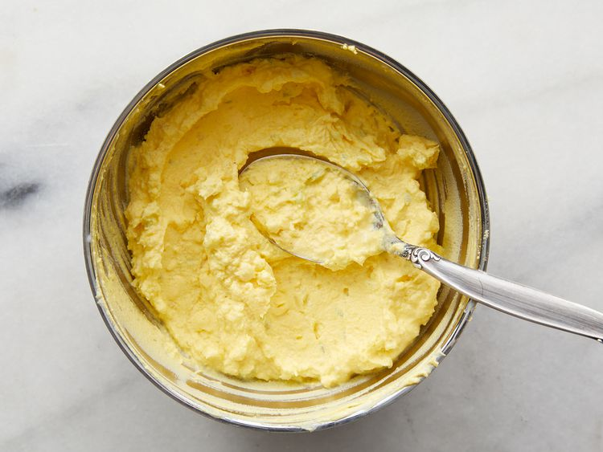
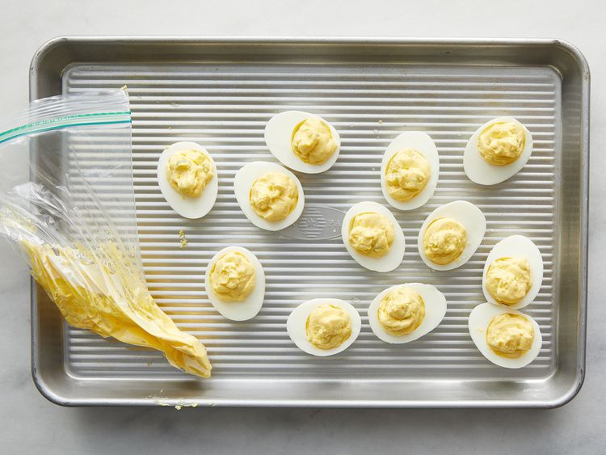
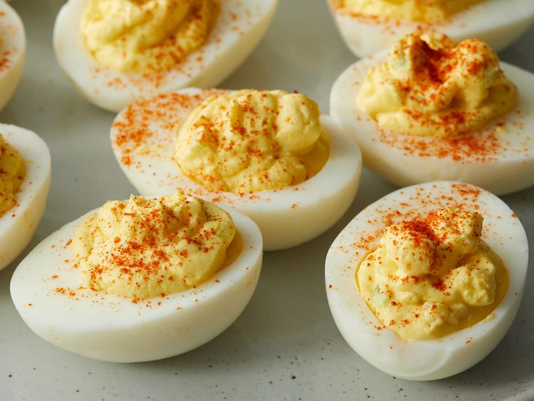

A go-to deviled egg recipe.
6 hard-boiled eggs
2 tablespoons mayonnaise
1 teaspoon white sugar, or to taste
1 teaspoon white vinegar
1 teaspoon prepared mustard
1 tablespoon finely chopped onion
1 tablespoon finely chopped celery
1 tablespoon finely chopped celery
1 pinch paprika, or to taste
Gather all ingredients. Peel hard-boiled eggs.
Slice eggs in half lengthwise and remove yolks; set whites aside.
Mash yolks with a fork in a small bowl. Stir in mayonnaise, sugar, vinegar, mustard, onion, and celery; mix well and season with salt to taste.
Stuff or pipe egg yolk mixture into egg whites.
Sprinkle with paprika. Refrigerate eggs until serving.
